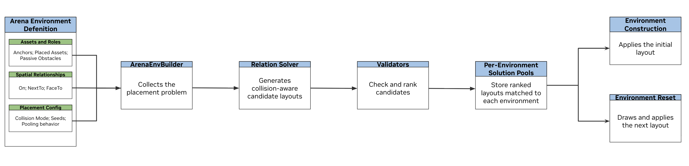
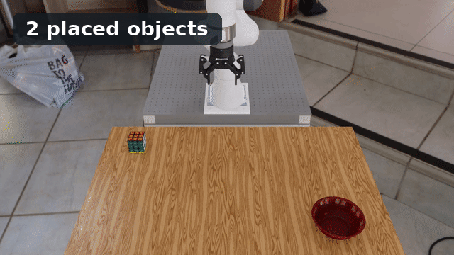

Object and Robot Placement#
Motivation#
Placement determines the initial poses of objects and, when configured, the robot embodiment in an Arena environment. For a fixed environment, you can set every pose manually. This becomes brittle when the selected assets or their dimensions change.
Suppose you want a microwave on a table with a cracker box next to it. Manual placement requires looking up the table height, measuring both objects, and chaining those dimensions into world coordinates:
# Table surface: z = 0.42 m.
# Microwave: 0.50 m wide and 0.30 m tall.
# Cracker box: 0.064 m wide and 0.212 m tall.
clearance_m = 0.01
microwave_z = 0.42 + 0.30 / 2 + clearance_m
microwave.set_initial_pose(Pose(position_xyz=(0.0, 0.0, microwave_z)))
cracker_box_x = 0.50 / 2 + clearance_m + 0.064 / 2
cracker_box_z = 0.42 + 0.212 / 2 + clearance_m
cracker_box.set_initial_pose(
Pose(position_xyz=(cracker_box_x, 0.0, cracker_box_z))
)
If the table height or either object’s dimensions change, every dependent coordinate must be recalculated. Relation-based placement instead describes the intended arrangement:
from isaaclab_arena.relations.relations import IsAnchor, NextTo, On, Side
table.add_relation(IsAnchor())
microwave.add_relation(On(table))
cracker_box.add_relation(On(table))
cracker_box.add_relation(
NextTo(microwave, side=Side.POSITIVE_X, distance_m=0.01)
)
ArenaEnvBuilder collects these relations and prepares candidate layouts
during environment compilation. It applies selected layouts when environments
are created and reset.

Spatial relations describe the intended layout. Arena optimizes poses against the relations and collision constraints together.#
When to Use Placement Relations#
Use fixed poses when an Arena environment has one known layout. Use placement relations for assets whose poses should be computed automatically, especially when you need:
layouts that adapt to different assets or asset dimensions;
diverse but reproducible layouts across environments and resets;
collision-aware placement among placed assets and fixed geometry;
a shared layout description across parallel environments; or
geometric relation checks and optional physics stability testing.
See pick_and_place_maple_table_environment.py for a complete Python environment definition.
System Overview#
Arena turns one environment definition into layouts for environment creation and resets. The builder collects assets, spatial relations, and placement settings; the solver generates candidate layouts; validators evaluate them; and the placer stores ranked layouts for each environment. Objects and supported robot embodiments use the same pipeline.
Anchors and passive obstacles remain fixed: anchors serve as relation references, while passive obstacles contribute collision geometry. The solver computes poses for placed objects, objects selected from object sets, and supported robot embodiments. Across parallel environments, object identity can be homogeneous or heterogeneous.
{kind=link}

Use this table as a reading map:
Topic |
What it explains |
Read |
|---|---|---|
Environment compilation |
How |
|
Spatial relations and anchors |
How to mark fixed references and describe intended positions and orientations |
|
Collision handling and passive obstacles |
How overlap is checked among placed assets and fixed geometry using bounding boxes or meshes |
|
Placement solver and robot embodiments |
How candidate poses are generated, including random yaw initialization and robot embodiment placement |
|
Placement validation |
How build-time geometric and reachability checks evaluate candidates, and how in-simulation physics checks evaluate stored layouts |
|
Pooled placement and reset |
How ranked layouts are stored, assigned to environments, reproduced, and refreshed on reset |
|
Homogeneous and heterogeneous objects |
How the same or different registered objects are represented and placed across parallel environments |
Try It Out#
Run a quick placement example from the repository root. The
pick_and_place_maple_table environment already contains a Rubik’s cube and
a bowl. The command below adds three registered objects, each with an
On(table_reference) relation. The solver computes a collision-aware pose
for each one.
Note
Commands using --viz kit require an available graphical display. In a
remote or container session, configure display forwarding and set
DISPLAY to the active X display, for example export DISPLAY=:1.
python isaaclab_arena/evaluation/policy_runner.py \
--viz kit \
--policy_type zero_action \
--num_steps 100 \
pick_and_place_maple_table \
--additional_table_objects cracker_box mug tomato_soup_can
{kind=link}

Each run adds registered objects with different dimensions. The solver recomputes a collision-aware layout without manual pose changes.#
Replace the names after --additional_table_objects with other registered
objects to see placement adapt to different dimensions and footprints.